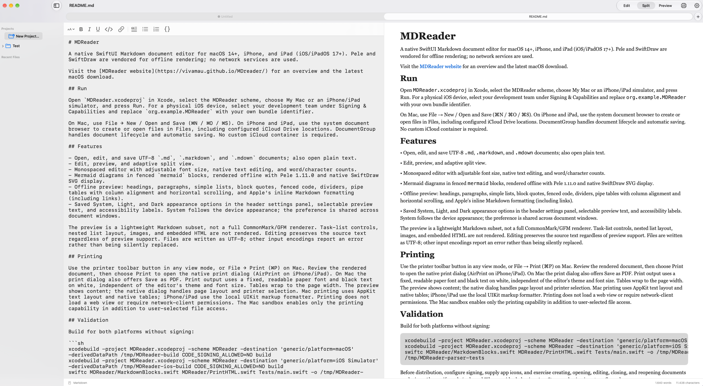

03 / Your workspace
A library for loose files.
Return to recent documents, arrange references into projects, and drag files between them. MDReader organizes links to the originals, leaving every file where you put it.
Native Markdown for Apple devices
MDReader pairs a focused editor with a live preview, offline Mermaid diagrams, and a library that keeps your documents close.
Version 0.4.0 · macOS 14+ · Apple Silicon & Intel

01 / The experience
Move from source to rendered document without losing your place. Resize the split, choose the type and color that suit your eyes, and keep writing.
MDReader opens standard Markdown files. Your work stays portable, readable, and yours.
02 / Diagrams
Write Mermaid inside a fenced block and watch it become a diagram. Pele renders locally, so flowcharts, sequences, states, and pies work without a web service.
Explore Mermaid examples ↗03 / Your workspace
Return to recent documents, arrange references into projects, and drag files between them. MDReader organizes links to the originals, leaving every file where you put it.
Choose separate editor and preview fonts, adjust the size, and set light and dark canvas and text colors.
Preview the page with your selected font. Tables and Mermaid diagrams travel into the native print dialog.
Apply headings, emphasis, links, quotes, lists, and code from the editor toolbar while keeping Markdown visible.
04 / Local by design
Preview and Mermaid rendering happen on your device. The app uses no network service to read or transform your writing.
Ready when the next idea arrives
Free and open source · macOS 14+